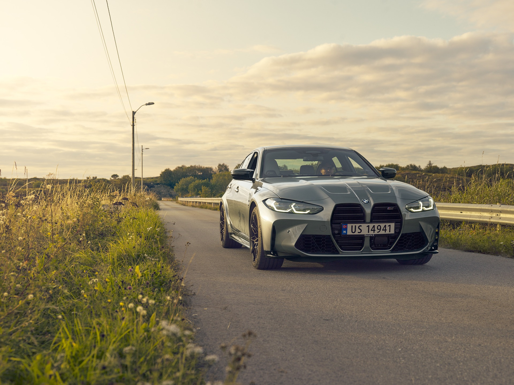
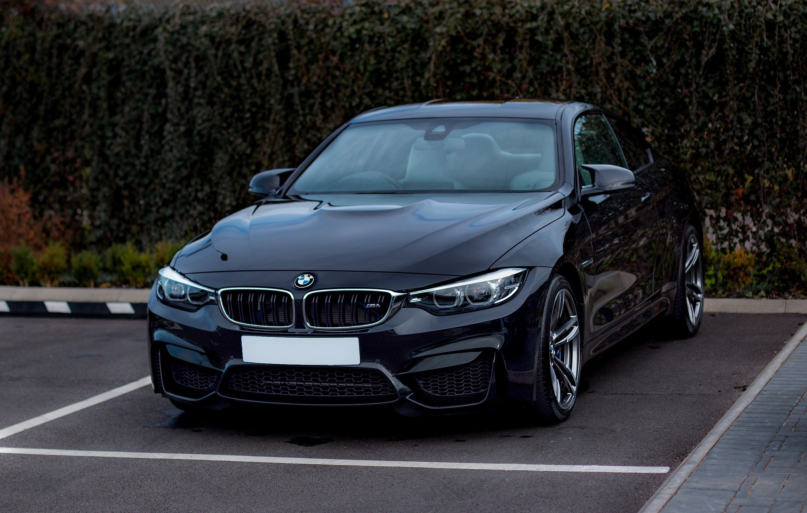

BMW M2

La BMW M2 Coupé combine des proportions typiques de BMW et un design puissant avec une sportivité directement issue de la compétition automobile. Le moteur BMW M 6 cylindres en ligne M TwinPower Turbo développe une puissance de 460 ch et un couple de 550 Nm
BMW M3
La BMW M3 Competition Berline se caractérise par la calandre M expressive dans une interprétation maximale dynamique et réduite. Elle développe une puissance sportive de 510 ch et un couple de 650 Nm
BMW M4
La BMW M4 Competition Coupé développe une puissance sportive de 510 ch et un couple de 650 Nm. Équipée du moteur M TwinPower Turbo à hautes performances, d’une boîte de vitesses M Steptronic à 8 rapports Sport avec Drivelogic et de nombreuses technologies dérivées de la compétition